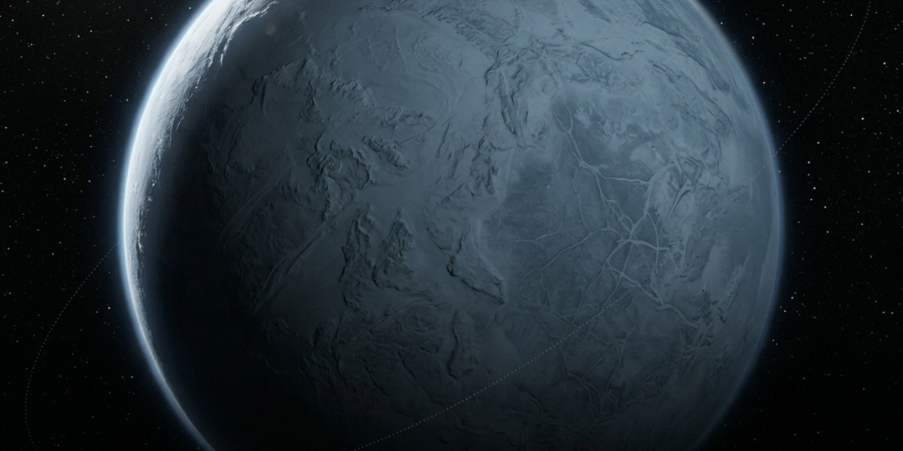

Geekotidien · Édition du 26 novembre 2026
Planète X2 hypothétique
Une super-Terre proposée par une seule étude, sans preuve d'existence

Une équipe dirigée par Patryk Sofia Lykawka (université Kindai, Japon, et université du Queensland-Sud, Australie) propose dans la revue Monthly Notices of the Royal Astronomical Society une planète hypothétique, Planet X2 (PX2), distincte de la neuvième planète. Selon l'étude, elle aurait 1,5 à 2 fois la masse de la Terre, un demi-grand axe de 350 à 500 UA et un périhélie jamais inférieur à 200 UA, d'après Futura Sciences.
Les simulations de 4,5 milliards d'années, avec une migration de Neptune, retrouvent plusieurs anomalies orbitales observées. En 2016, Konstantin Batyguine et Michael E. Brown (Caltech) avaient expliqué ces anomalies par une neuvième planète. Jonti Horner, coauteur, évoque l'observatoire Vera C. Rubin pour tester l'hypothèse.
Le journaliste précise que les simulations n'apportent pas la preuve de l'existence de la planète. Il s'agit d'une hypothèse issue d'une seule étude.
Le + : Pluton a un demi-grand axe de 39,88 UA ; PX2 serait donc bien plus éloignée.